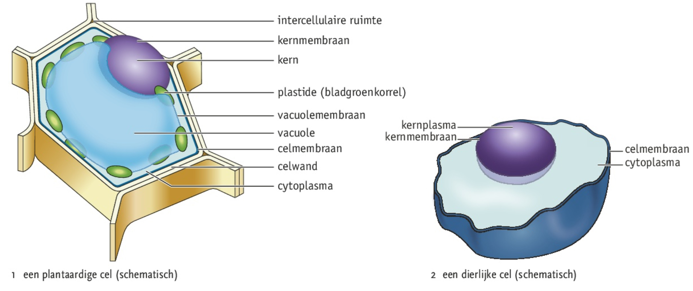
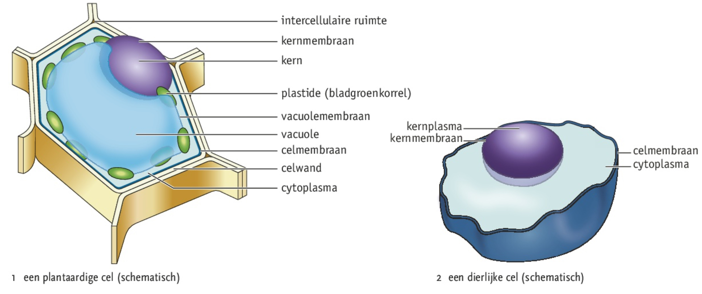

Je kunt delen van dierlijke cellen en van plantaardige cellen herkennen en de functies ervan benoemen.
Je kunt een microscoop gebruiken en daarmee (delen van) organimsen bestuderen.
Je kunt delen van dierlijke cellen en van plantaardige cellen herkennen en de functies ervan benoemen.
Je kunt een microscoop gebruiken en daarmee (delen van) organimsen bestuderen.
 Plantaardige en dierlijke cellen
Elk deel van een cel met een eigen functie noem je een organel. Celmembraan is de buitenste laag van een cel, bij plantaardige cellen ligt daaromheen nog een celwand. Het inwendige van de cel, het cytoplasma, bestaat uit grondplasma met daarin organellen. In het cytoplasma ligt ook de celkern met als buitenste laag het kermembraan. Veel plantaardige cellen bevatten een vacuole met vacuolevocht omgeven door vacuolemembraan. Bij planten kunnen in het cytoplasma ook plastiden voorkomen:
cholorplastiden (bladgroenkorrels), bevatten groene kleurstoffen (chlorofyl)
chromoplasten, bevat gele, rode en oranje kleurstoffen
leukoplasten dienen om stoffen als vet, eiwitten en zetmeel in op te slaan
Tijdens het rijpen van vruchten gaan chloroplasten over in chromoplasten. Intercellulaire ruimte is gevuld met lucht of vocht.
Werken met een lichtmicroscoop
Cellen kun je onder een microscoop bekijken in een preparaat, het object in een preparaat moet erg dun zijn om licht door te kunnen laten.
Elektronenmicroscopen
Bij een transmissie-elektronenmicroscoop, TEM, wordt een elektronenbundel op het object gericht. Bij een scanning elektronenmicroscoop, SEM, weerkaatst het object de elektronen. Een TEM geeft 2D beeld en een SEM 3D.